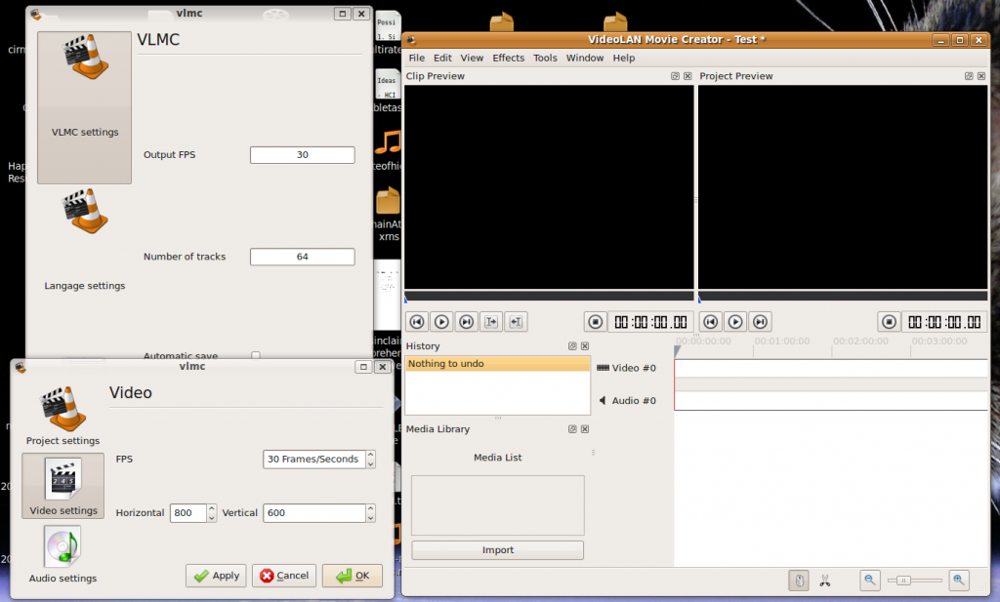

23 décembre 2009
VLMC : Logiciel de montage vidéo Open Source
VLMC (VideoLAN Movie Creator) est un nouveau logiciel développé par des étudiants français d'Epitech et soutenu par le Google Summer of Code et VideoLAN qui développe déjà le très connu lecteur vidéo VLC.
Ce logiciel proposera de l'édition vidéo pour réaliser des films de qualité "semi-professionnelle" en gardant une interface simple et accessible pour les utilisateurs.
Bien entendu il sera Open Source et disponible très bientôt sur Windows, Linux et Mac OS X !
Pour ceux qui voudraient déjà essayer la bête il faut récupérer les sources avec Git, plus d'informations ici.
Voici ce à quoi pourra ressembler l'interface (susceptible d'évoluer pour la première version publique) :


Je trouve que c'est plutôt une bonne surprise de fin d'année :) Edit : Voici un screencast de chouquette présentant le logiciel :
Commentaires 2